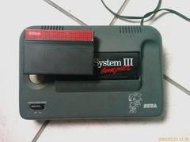
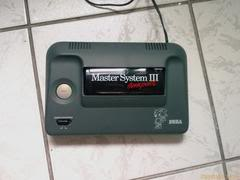

Como restaurar a aparência do Master I/II e III
 :::. Por Gigacom
:::. Por Gigacom
Sabe quando você vai numa feira do tipo mercadão das pulgas, e vê
aquele cara que catou um Master System no lixo de uma casa, e que tava
sendo usado como adorno para o jardim, e te oferece o coitado do Master
por R$5,00? Impossível resisitir não é mesmo? E aquele outro Master que
você encontrou largado às baratas e poeira no fundo duma caixa naquela
banquinha na feira, e que o feirante tá "doando" por R$10,00? Em
situações assim, a única coisa que nos obriga a evitar comprar um
console é justamente o estado dele. A boa noticia além do preço, é que
com um pouco de dedicação e trabalho, dá pra deixar muito video game
surrado de cara limpa e brilhando, com um aspecto muito bom e feliz  ! Abaixo
segue algumas dicas de restauração:
! Abaixo
segue algumas dicas de restauração:
Master System I e II: esse grande console (tanto na
qualidade quanto no tamanho mesmo  ) tende a sofrer com acumulo de poeira e de insetos em seu interior.
Isso se deve ao fato de haver vários furos na carcaça que
serve como ventilação, mas que nas horas de abandono
viram uma verdadeira porta para a entrada para poeira e bicho. O
primeiro passo, é logicamente abrir e desmontar o console. Logo
de cara, quando se abre ele, se dá de frente à uma chapa
metálica cobrindo toda a placa mãe do video game, tanto
por cima como por baixo. Essa placa sofre oxidação com
facilidade, até mesmo em contato com a mão. Desparafuse
essa placa, e de preferência com uma luva, ou mesmo com um pano
seco, e remova ela com cuidado, pois tende tambem a amassar com
facilidade, e deixe-a em um canto separado. Retire a placa mãe
depois de remover os dois parafusos que a prendem na parte
plástica do console. Esses dois parafusos são os que
estão em cada lado do slot de entrada de cartuchos. Depois
retire a chapa metálica de baixo da placa mãe, e assim o
Master estará completamente desmontado pronto para o banho.
Agora vamos à limpeza:
) tende a sofrer com acumulo de poeira e de insetos em seu interior.
Isso se deve ao fato de haver vários furos na carcaça que
serve como ventilação, mas que nas horas de abandono
viram uma verdadeira porta para a entrada para poeira e bicho. O
primeiro passo, é logicamente abrir e desmontar o console. Logo
de cara, quando se abre ele, se dá de frente à uma chapa
metálica cobrindo toda a placa mãe do video game, tanto
por cima como por baixo. Essa placa sofre oxidação com
facilidade, até mesmo em contato com a mão. Desparafuse
essa placa, e de preferência com uma luva, ou mesmo com um pano
seco, e remova ela com cuidado, pois tende tambem a amassar com
facilidade, e deixe-a em um canto separado. Retire a placa mãe
depois de remover os dois parafusos que a prendem na parte
plástica do console. Esses dois parafusos são os que
estão em cada lado do slot de entrada de cartuchos. Depois
retire a chapa metálica de baixo da placa mãe, e assim o
Master estará completamente desmontado pronto para o banho.
Agora vamos à limpeza:
1º Pegue um balde ou uma
bacia e enche-a bem. Você tambem pode usar um tanque cheio de
água se quiser. Coloque sabão ralado (você pode
usar OMO tambem, mas sabão ralado tende a dar resultados
melhores, além de ser bem mais facil de se tirar que OMO),
dissolva bem o sabão, e coloque a parte plástica do video
game dentro da água. Mexa um pouco e deixe tudo ali de molho por
uns 10 ou 15 minutos.
2º Enquanto o
plástico tá de molho, pegue um pincel novo e limpo, com
cerdas longas e macias, e vá limpando com cuidado a poeira entre
os circuitos na placa mãe; alguém poderá dizer: mas pincel acumulará eletricidade estatica! Pode queimar a placa! Bem, isso
não deixa de ser uma verdade, SE VOCÊ VARRER A PLACA COMO ALGUÉM QUE
VARRE A CALÇADA!  Limpe tudo com calma e devagar, que não haverá acumulo
de carga e nem risco algum.
Limpe tudo com calma e devagar, que não haverá acumulo
de carga e nem risco algum.
3º As chapas metalicas
você poderá limpar com um pano seco. Porém
há casos em que a chapa esta tão oxidada, e tem tanta
poeira grudada que apenas passar o pano não irá resolver.
Nesse caso, pegue uma esponja de cozinha, e com a parte abrasiva, lixe
com cuidado a parte corroída, além de melhorar a
situação, irá tirar a sujeira que estiver ali.
É claro, se a corrosão estiver em um estagio muito
avançado, o jeito será removê-la e deixar ela fora
do console mesmo...
4º Volte
até o balde com as partes plasticas do Master, coloque um pouco da água com sabão numa esponja macia, e vá limpando a parte plastica por
inteiro. Nos furos e fendas de entrada de ar, use uma escora de dente
por exemplo para retirar os residuos de poeira. Enxague tudo, e repita a
operação, tendo o cuidado de passar a escova nas quinas e dobras da
parte interna do plástico, que é justamente as partes onde a poeira gruda.
Enxague novamente.
5º Após
o enxague, dê uma sacudida de leve no plastico para tirar o
acumulo de água. Coloque tudo dentro de uma bacia grande, e deixe a
bacia em um local arejado com sol, MAS NÃO COLOQUE EM HIPOTESE ALGUMA DIRETO NO SOL!
Apenas deixe num lugar à sombra, arejado mas quente o suficiente
para que a água evapore. Deixe secar por alguns minutos, e para
ter certeza de que irá tudo estar seco mesmo, aproveite a
água com sabão para lavar umas cuecas e meias, pendure no
mesmo local onde estará o Master. Muito provavelmente, assim que
as cuecas e meias estiverem secas, o Master tambem deverá estar
sequinho  .
.
6º Após tudo seco e
bem limpo, monte com calma o Master System, com o cuidado de não
deixar nenhum parafuso de fora. Durante a montagem, caso não
tenha experiência, nunca force o encaixe de algo de qualquer
forma, pois poderá quebrar ou amaçar alguma peça
de plastico ou mesmo as chapas de metal. Tenha paciência e
cuidado. Após tudo montado, passe uma toalha macia em todo o
plastico para dar aquele brilho, ligue novamente o video game, tire uma
foto do seu trabalho e divirta-se! Ah! Só para frisar...
não tente passar nada em cima do console para deixá-lo
mais brilhante... usar silicone, lustre para plasticos, serol,
purpurina, tinta de cabelo, óleo de cozinha... enfim, usar
qualquer coisa poderá estragar completamente a aparência
do console, e de forma até irreversivel! Portanto, tenha cuidado!
Master
System III:
internamente esse console tem várias versões, mesmo entre
aqueles modelos considerados clássicos. Em uns a placa
mãe recheia bem o espaço interno, em outros a placa
principal é do tamanho aproximado de dois celulares um do lado
do outro. Invariavelmente, desmontá-lo é uma tarefa
simples até o ponto em que chegamos na fonte interna do
console... essa fonte é meio complicada de se remover, e
não recomendo a remoção da mesma para quem
não tem experiência, ou não quer arriscar estragar
o console. Portanto, procure desmontar e tirar somente a placa
mãe, e limpar ali dentro com um pincel qualquer residuo de
poeira ou sujeira. E para dar um grau
na aparência do console, você pode limpar a parte de cima
de plástico dele, da mesma forma como se faz em um Master I/II.
Uma coisa que costuma encardir com mais facilidade no Master III é o botão de pause. Como é um botão branco, tende a sofrer com mudança de coloração com o passar do tempo, não raro ficando com uma cor e aparência suja, mesmo mantendo-o livre de poeira. Para limpá-lo e trazer a brancura de volta (ou pelo menos deixá-lo menos encardido), vire a parte superior do plástico que compõe a parte de cima do console, e logo abaixo do botão pause você verá que ele é preso por duas travinhas de plástico; pressione-as para dentro e empurre o botão de dentro para fora, assim você terá somente essa peça livre para poder limpá-la da melhor forma possível. Recomendo que deixe essa peça de molho em um pote com agua, OMO e se possível um pouco de Vanish só para garantir. Depois de alguns minutos você terá o bendinto botão mais limpinho e pronto para ornamentar da melhor forma possível o Master novamente.
Testado e aprovado!
Um amigo nosso (o grande Vlad_djkax) seguiu essas dicas de limpeza e veja o resultado:
|  |  |
| Antes da limpeza... | E depois. Notem como ficou mais bonito e com a tampa brilhante. |
É isso pessoal. A limpeza de
qualquer Master System pode fazer milagres na aparência dele, e
trazer orgulho para o dono. É mais ou menos como um carro...
depois de um lustre, a lata velha se mostra uma vez mais como é
bonita.